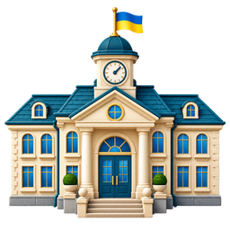

І СЕМЕСТР · 2026–2027 НАВЧАЛЬНИЙ РІК
Розклад уроків
5–11 класи

Квітневий ліцей
← Повернутися на головнуЗАРАЗ У ШКОЛІ
Розклад на сьогодні
Час уроків за Києвом
До наступного дзвінка--:--
Хвилина мовчання
Щодня о 09:00–09:01. Вшановуємо пам’ять загиблих.
Звук активується після звичайного дотику до сайту. Тримайте сторінку відкритою, а пристрій — активним.
5–11 КЛАСИ
Загальний розклад уроків
Розклад на день
Підгрупи та позначення в розкладі
Позначення «1п», «2п» — підгрупи. Предмети через «/» показані разом, як у шкільному розкладі; кожен можна виділити окремо. Математику збережено під назвою з документа.
У 6 класі в середу на 6-му уроці в джерелі обидва предмети позначені «1п». Цей запис збережено до уточнення.
Синій рядок — урок, який триває зараз. Таблицю можна гортати вбік.
РИТМ ШКІЛЬНОГО ДНЯ